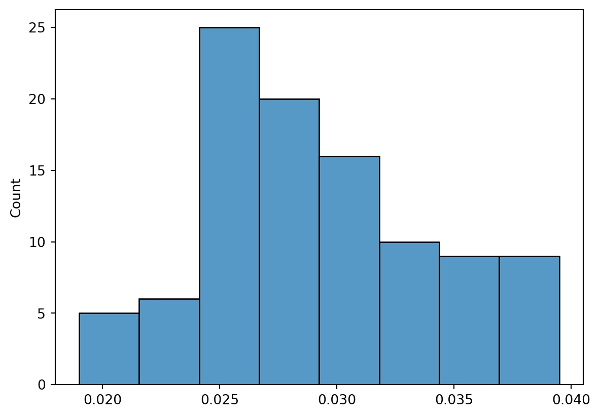

In Chapter 4, we used logistic regression to predict the probability of default using income and balance on the Default data set. We will now estimate the test error of this logistic regression model using the validation set approach. Do not forget to set a random seed before beginning your analysis.
(a)
Fit a logistic regression model that uses income and balance to predict default.
First we load the data.
import pandas as pddefault = pd.read_csv("data/Default.csv")default.head()
default
student
balance
income
0
No
No
729.526495
44361.625074
1
No
Yes
817.180407
12106.134700
2
No
No
1073.549164
31767.138947
3
No
No
529.250605
35704.493935
4
No
No
785.655883
38463.495879
We wish to predict default, which is stored as “No/Yes”. We must convert it to \(1\) and \(0\) to proceed; we use the replace method for this. We also replace the value in “student” for later use.
Fit a multiple logistic regression model using only the training observations.
We can use LogisticRegression from sklearn.linear_model for this, but statsmodels is also possible. Recall that we need to specify penalty="none" when using sklearn!
from sklearn.linear_model import LogisticRegressionfit = LogisticRegression(penalty ="none").fit(x_train, y_train)
Obtain a prediction of default status for each individual in the validation set by computing the posterior probability of default for that individual, and classifying the individual to the default category if the posterior probability is greater than 0.5.
The predicted probabilities can be found using the method predict_proba. This function returns an array containing the classification probabilities for each class label. We are interested in the second probability, the probability of obtaining the class label 1.
It’s also possible to do this using the predict method:
(predictions == fit.predict(x_test)).all()
True
Compute the validation set error, which is the fraction of the observations in the validation set that are misclassifed.
A misclassification occurs when the predicted value of \(Y\) does not match its true value. Since we are dealing with the test set now, we can write:
(predictions != y_test).mean()
0.0265
Repeat the process in (b) three times, using three diferent splits of the observations into a training set and a validation set. Comment on the results obtained.
This task is about taking everything you did in (b) and turning it into a function. Let’s do that!
def clf_error(x, y, random_state, test_size):""" Estimate classification error when running a regression with covariates x and response y, using the split given by test_size and random_state. """ x_train, x_test, y_train, y_test = train_test_split(x,y, random_state=random_state, test_size=test_size, shuffle=True) fit = LogisticRegression(penalty ="none").fit(x_train, y_train)return (fit.predict(x_test) != y_test).mean()
Then we may call
[clf_error(x, y, random_state, 0.20) for random_state in [1,2,3]]
[0.0295, 0.0285, 0.03]
The misclassification error is random. That’s expected, since the split into training and test set is random.
There is no need to stop here: We can do this a thousand times instead. (This could take a minute or two to run.) Doing it a lot of times is generally speaking better - the more the merrier.
results = [clf_error(x, y, random_state, 0.20) for random_state inrange(100)]
Then make a histogram of the results
import seaborn as snsimport matplotlib.pylab as pltsns.histplot(results)plt.show()

The histogram tells us that the estimated classification error is quite precise. Not surprisingly, the distribution looks roughly normal. We can get more information by looking at its mean and standard deviation:
import numpy as np[np.array(results).mean(), np.array(results).std(ddof=1)]
[0.029175000000000003, 0.00477650764183679]
(d)
Fitting this model requires a minor modification of our work. First, we need our x to contain student now. Hence we run:
Then we use the function from (c) to estimate the misclassification probability for both models.
results_stud = [clf_error(x_stud, y_stud, random_state, 0.20) for random_state inrange(100)][np.array(results_stud).mean(), np.array(results_stud).std(ddof=1)]
[0.0322, 0.0037906050794941524]
The mean classification error (0.0322) is higher with student than without. If you mostly care about classification error (Which you shouldn’t! It’s not a good measure of model performance!) you will choose the model without student included.
If you use a more sane metric, including student would be prudent. Consider the AIC for both models:
smf.logit("default ~ income + balance", data = default).fit().aic
Optimization terminated successfully.
Current function value: 0.078948
Iterations 10
1584.9662701962932
smf.logit("default ~ income + balance + student", data = default).fit().aic
Optimization terminated successfully.
Current function value: 0.078577
Iterations 10
1579.5448275789595
Recall that you choose the model with the smallest AIC, thus the second model is the best according to this (more sane) metric.